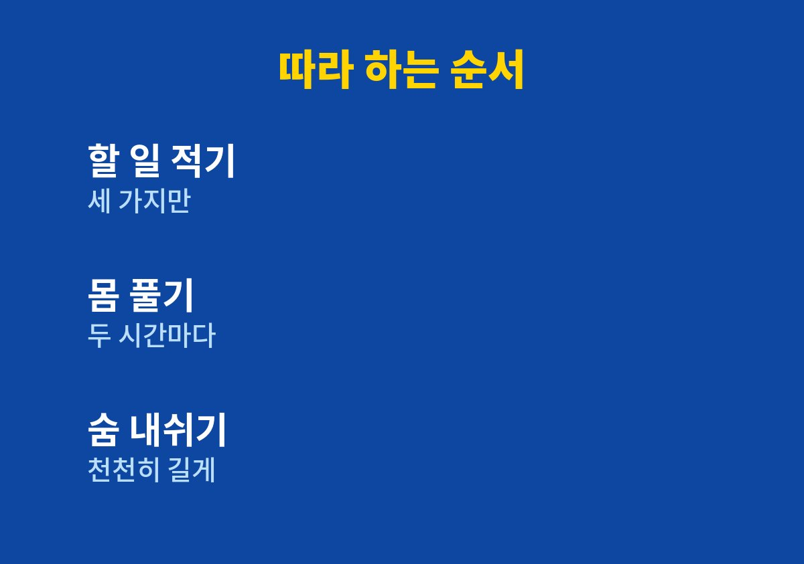

스트레스 푸는 법, 실제로 해 볼 수 있는 순서로 담았다.
일과 육아를 한꺼번에 하느라 늘 예민하고 지쳐 있는 사람이라면 끝까지 읽어 볼 만하다.
스트레스를 없애는 방법이 아니라 쌓이기 전에 풀어 두는 습관을 내가 해본 순서대로 정리했다.
주문 알림이 울리는 중에 아이가 부르면 목소리가 괜히 날카로워졌다.
그때마다 어깨가 올라가고 숨이 얕아져 있다는 것을 뒤늦게 알았다.
스트레스는 마음의 문제처럼 보이지만 숨과 어깨, 잠 같은 몸의 변화로 먼저 드러난다고 느꼈다.
퇴근하고 아이와 놀아 줄 때조차 머릿속은 내일 배송 걱정으로 가득 찼다.
주변 사장님들과 이야기해 보면 비슷하게 지쳐 있는 사람이 생각보다 많았다.
잠이 얕아지고 사소한 말에 짜증이 나는 것도 흔한 신호라고 생각한다.
중요한 것은 참는 것이 아니라 풀어 줄 방법을 미리 정해 두는 것이었다.
일과 육아가 겹치면 제대로 쉬는 시간이 하나도 없는 날이 많다.
쉬려고 앉아도 휴대폰으로 주문을 확인하다 보면 쉰 것이 아니었다.
그래서 오래 쉬기보다 짧게라도 확실히 끊는 쪽으로 방향을 잡았다.
그 상태로 며칠이 지나면 작은 일에도 쉽게 지치고 잠도 설쳤다.
나만 유난히 약한 것인지 자책한 적도 있었다.
처음에는 운동도 하고 명상도 하겠다며 계획을 크게 잡았다.
하지만 아이를 돌보다 보면 사흘을 넘기기 어려웠다.
그래서 하루 중 어디에든 끼워 넣을 수 있는 아주 작은 습관만 남겼다.
첫째는 천천히 내쉬는 숨이다.
세계보건기구도 스트레스 대처 안내에서 호흡에 집중하는 방법을 소개하고 있어 믿고 따라 해보았다.
둘째는 일하다 막히면 자리에서 일어나 가볍게 몸을 움직이는 것이다.
숨을 내쉴 때 어깨가 내려가는 느낌을 확인하면 훨씬 따라 하기 쉬웠다.
몸을 움직일 때는 거창한 운동이 아니라 목과 어깨를 크게 돌리는 정도면 충분했다.
셋째는 걱정을 머릿속에 두지 않고 종이에 적어 두는 것이다.
적고 나면 오늘 할 일과 내일 할 일이 나뉘어 마음이 한결 가벼워졌다.
다음 날 아침에 그 종이를 다시 보면 걱정의 절반은 생각보다 작아 보였다.
이 세 가지는 도구도 비용도 필요 없어서 바쁜 날에도 이어 가기 좋았다.
아래 순서는 내가 실제로 하루에 끼워 넣어 본 방식이다.
효과는 사람마다 다르므로 부담 없이 가능한 것부터 해보면 된다.
다섯 가지를 모두 하려고 욕심내지 않는 것이 가장 중요한 기준이다.
하루에 한 가지라도 지켰다면 그날은 성공이라고 생각한다.
표의 시간은 정해진 기준이 아니라 내가 쓴 방식을 적은 것이다.

1. 일을 시작하기 전에 해야 할 일 세 가지만 종이에 적는다.
2. 두 시간마다 자리에서 일어나 어깨를 돌리고 몸을 가볍게 움직인다.
3. 예민해지는 순간에는 코로 들이마시고 입으로 천천히 길게 내쉰다.
4. 잠들기 전에는 머릿속 걱정을 한 줄씩 적어 내일로 넘긴다.
5. 일주일 뒤 가장 편했던 한 가지만 남겨 계속 이어 간다.
| 상황 | 내가 쓴 방법 | 걸리는 시간 |
| 일하다 막힐 때 | 자리에서 일어나 몸 움직이기 | 잠깐 |
| 욱하고 화날 때 | 천천히 길게 내쉬기 | 잠깐 |
| 잠들기 전 | 걱정 종이에 적기 | 몇 분 |
스트레스는 없애려 할수록 더 커지기 쉽다.
나는 짧은 호흡과 가벼운 움직임만으로도 하루의 끝이 덜 무거워졌다.
그래도 불면이나 우울감, 가슴 두근거림이 오래 이어진다면 혼자 버티지 말고 전문의와 상담하는 것이 좋다.
오늘 당장 한 가지만 골라 내일까지 이어 가 보길 권한다.
작은 습관이 쌓이면 예민했던 하루의 끝이 조금씩 달라진다.
나도 여전히 바쁘지만 숨을 고르는 순간만큼은 놓치지 않으려고 한다.
이 글이 지친 하루를 보내는 분께 작은 출발점이 되면 좋겠다.
※ 2026년 기준 개인 경험과 공식 기준을 바탕으로 정리한 일반 건강 정보이며, 증상이 계속되거나 지병이 있다면 전문의와 상담하시길 바란다.